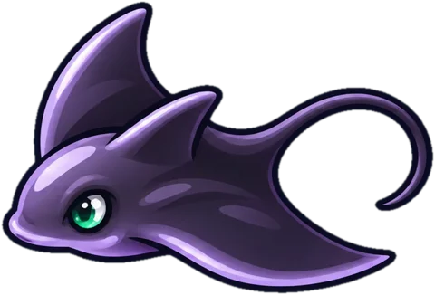

 WaterDark
WaterDarkTap a stage to read its story.
Small and sleek, this Mantlet is the colour of deep bruise - dark purple-blue with bright round eyes that catch light like a nocturnal animal's. It glides low through the dark forest's shadow pools, its flat body perfectly matching the blackness between the roots. Its short whip-tail flicks side to side when it is alert. The dark forest variant never strays toward light; it is drawn instead toward the deepest shade, where it circles slowly as if guarding something sleeping in the dark.
Field note: This Mantlet's eyeshine is visible from six metres in complete darkness - travelers spot it like two tiny lanterns moving low to the ground.
Dark Forest. Mantlet and its family are found in the Dark Forest. See everyone who lives there.
Share a Bond Food that matches its types to become friends. Mantlet loves:
A Bond Food is not a trick. It joins your spirit with the Kimuro's spirit, and only when it chooses you.
Print the Kimuro adventure packs: mazes, cards, a board game and Bond Mark medals.
See the printable packs